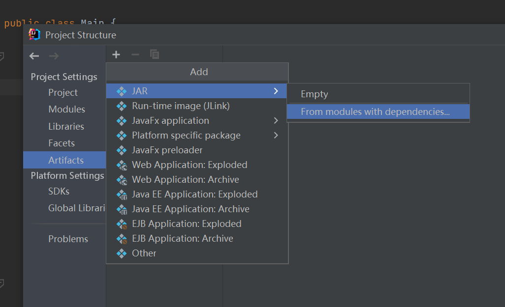

BUAA_OO_U1
BUAA_OO_U1_Summary
一 / 架构设计
1.0> 题目解析
- 给出一个最多嵌套一层括号的表达式，进行展开与同类项合并。表达式里的运算有
+ - * **，变量是x。 - 新增函数：三角函数、求和函数（出现变量
i）、自定义函数（出现变量yz）。 - 括号可嵌套多层。
1.1> HW1
1.1.1> 做法分析
整个过程中，我需要做的就是展开表达式。
表达式有三种，一种是只有加法的，一种是又有加法又有乘法的，另一种是套着括号的。套着括号的又有两种，一种是只有加法的，一种是又有加法又有乘法的。所以在这里，我们发现了一个loop：表达式 -> 项 -> 带括号的表达式 -> 表达式 -> ···
一开始，看到这个题目，本人首先想到的是用表达式树去做。但是看到题目中“不推荐使用栈”以及training的代码提供的框架后，蒟蒻也去搜寻了一下递归下降的思想。
如果化用到这道题目里，那大概是这样的：
这里涉及到一些分类：
- 表达式：由加号连接的算式
- 项：由乘号连接的算式 -因子：最小元，在第一次作业里即为幂函数（把常数也是一种特殊的幂函数）或者括号。
- 括号：剥开来又是表达式
所以，这里用到的计算顺序就是从整体的表达式开始，一点点下降到项，再到因子，从因子返回计算好的答案，回到项使之返回答案，回到表达式，返回最终答案。
1.1.2> 表示方法
蒟蒻采取了一些偷懒的办法，因为她发现，无论是表达式，还是项，亦或是因子，他们都可以称之为多项式：货真价实的多项式 / 单项式 / 比较小巧的单项式。所以全程本人均采用一个多项式（polynomial）对象进行加法或者乘法的运算，因子也是它，项也是它，表达式也是它。
1.1.3> 合并方法
由于需要应对性能分的重压，所以我们需要对多项式进行合并使得表达式尽量短。所以我们可以在每个多项式类用一个HashMap存多项式中的每个单项式，其中key代表次数，value代表系数。
1.1.4> 预处理
为了适应lexer，方便其分词，所以使用了非常繁杂的预处理（指预处理了6次）。其中涉及到的环节是去除连续的+-号，把减法变成加上一个负数，把所有的乘方变成乘法。
看起来是很符合常理的方法，但是，蒟蒻却采用了非常程设的for循环方法，导致她在debug的时候总是因为少了半拉括号，丢了一点符号，两个符号连在一起了而感到无助。
就比如进行乘方消失术的时候：
在这里我们需要知道的是：对谁求n次方，n是多少。方法即检测是否有连续出现的*，如果是连续出现的，由于题目限制，这里有两种情况：一，前面是x，这是幂函数；二，前面是个括号，需要拆开。所以还需要两个“指针”，在循环中不断记录最新的左括号和右括号位置，这里也是由于题目限制，只有一层括号所以可以这么做（言下之意，没有可扩展性）。等一路循环到**这里，两个“指针”记录的就是最后面的括号了。
好，现在分析出了需要n次方的对象，那么我们要把这个对象取出来。这很好办，要么是x，要么是整个括号。然后把这个子串拼到生成的串后面，两两之间添加*号即可。
n的求法更加简便，由于前面可能存在一个符号，故先把符号判断掉，如果没有符号就while(Character.isdigit(c))循环下去，和快读的样子差不多。当然，这道题里限制了符号只能是+，位数也不可能超过1，所以可以有适当的省略。
其中要注意的就是这个记录当前判断位置的“指针”来回跳转的位置，特别是需要跳过后面的n次方的数字，精准的抵达下一个处理的字符处。还有就是0次方1次方这种恼人的东西。所以在实现中，本人每次都在StringBuilder后面append字符，如果遇到各种次方，就把刚刚append上去的需要次方的子串删掉，再按数量拼接上去。
可见非常麻烦，也容易出现各种疏漏。
1.1.5> “分词"
这里完全借鉴了training里面的Lexer类，用的相同的方法，一点一点的读。所分的“词”有两种：因子（带符号的整数或者x）/
各种运算符（+*()）。
每次都往下读下一个可返回的“词”并返回，用于计算。
1.1.6> 计算方法
经过预处理之后，表达式已经变成了只有加法和乘法的样子。所以再借用递归下降的思路和多项式的对象存储，我们就可以开始计算表达式了！
表达式层：目标是全部变成加法，获得所有项的和。所以如果发现了+号，则往表达式内添加项；否则去往项层。
项层：目标是全部变成乘法，获得所有因子的乘积。所以如果发现了*号，则往项内添加因子；否则去往括号/因子层。
括号/因子层：括号即另一个表达式，同样需要进行加法操作。所以如果发现了(，则去往表达式层，如果是因子则直接返回因子对象，回退至项层，直至项层计算完毕，回退至表达式层，直至表达式计算完毕，输出结果。
加法：利用HashMap的特性，找到幂次相同的元素使系数直接相加，否则直接添加这个项。
乘法：直接系数相乘，幂次相加即可。
所以通过“分词器”遍历一次表达式，我们便可以计算出表达式展开后的结果，同时进行化简。
1.1.7> 代码构架：

- Main：负责读入并串联所有的方法，最后输出表达式。
- Initiate：负责预处理表达式，精简连续的符号，把减法全部变成加法，拆开所有乘方，删去所有前导零。
- Lexer：分词。
- Handler：递归下降的主体，拥有表达式层、项层、因子层和括号层，使每层各司其职，自上向下调用，自下向上返回展开+化简结果。
- AddOperator：即前文所述表达式层，得到所有的项并使之相加。
- MulOperator：即前文所述项层，得到所有的因子并使之相乘。
- Unit：其实叫Monomial更好，存了一个幂函数的系数和指数，便于封装，在HW1里面显得有一点点多余。
- Polynomial：HashMap里面存放Unit的集合，也就是用来存放各种算式的多项式对象，贯穿于整个计算过程。
1.2> HW2
同样的，整个过程中，我需要做的就是展开表达式。只不过，这次新增了很多函数。 自封的第一单元最痛苦的一次作业！
1.2.1> 迭代开发
首要的问题是，我如何继续利用之前的架构，在之前的架构上进行迭代以避免在一个自认为性能还可以的架构上进行大面积重构。也就是说，我需要考虑这些新增的要求需要对HW1的哪些设计做出变更。
- 三角函数：是一种新出现的因子！所以之前的把幂函数作为最小元的存储方式失效。
- 自定义函数和求和函数：是一种分词不能处理的语言！所以之前的预处理不足以满足之后的处理。（对，在第二次作业这里蒟蒻只想到了要对预处理进行变更，格局暂未打开。）
- 化简方式：三角函数涉及到的化简就多了，什么和差化积两倍角三倍角各种技巧，但这些都暂时不在蒟蒻的考虑范围之内，毕竟正确才是首要的。
在明晰了需要变更的地方之后，蒟蒻开始了新的征程。
1.2.2> 表示方法
多项式依旧还是之前的多项式，只不过HW1中显得多余的Unit可以被利用上了。这时，最小元变成了形如 $ a * x ^ b * [sin(Expr) ^ c] * [cos(Expr) ^ d] $ 的样子的项。\([ \space ]\) 的意思是这是一个一群三角函数相乘得到的表达式。这里稍微产生了一点点先见，在三角函数中存储的是一整个表达式，而非仅为题目描述的幂函数或者常数。
最小元的样子确定了，但为了维持之前计算和简化同时进行的策略，我们也需要对Polynomial对象中的HashMap存储的内容进行更改。这里本人遇到了两个难题：
- 如何存储所有的三角函数，毕竟一个项里面可以有很多相乘的不能合并的三角函数，这就和在乘法时可合并的幂函数区分开了。所以为了维护每个项中的三角函数，需要一个HashMap来存储这些相乘的三角函数。
- 如何存储所有的项，也就是Polynomial对象里面的单项式们改如何被堆放在一起，成了第二个问题。这里的关键矛盾在于，把什么作为key，什么作为value，才能在保证完成存储任务的情况下尽量实现合并同类项的功能。
经过四天的冥想和讨论学习（致使蒟蒻狂赶ddl才交上去），最终的解决方法：
- 在Unit中，用一个HashMap存储所有的三角函数，三角函数类（详见不太后的后文）作为key，这个三角函数的指数作为value，完成存储同时在相乘时实现同类项的合并。
- 而Polynomial只需要将Unit存放在一块儿即可。存储问题解决。为了实现合并同类项，本人同样使用了一个HashMap容器，Unit作为key，这个Unit的系数单独拿出来作为value，在相加和相乘的时候便于合并。
同时，这次的作业更加强调了需要对因子进行分类，分别建立对象，让他们自己处理自己的事情的能力。下面对本人在这次作业中分的类进行一些阐述，这一部分也是相较HW1的增量：
- TriX：三角函数的集合，属性为三角函数的类型和括号中的多项式。
- Func：自定义函数，属性为名字，参数列表以及表达式。内部封装好了分割表达式并通过传入函数的调用获得替换参数后表达式的方法。
- Sum：求和函数，属性为求和下界、上届以及求和表达式。内部封装好了把求和表达式展开成为加法连接的表达式的方法。
1.2.3> 合并方法
这里分为两个部分：
- 对于三角函数的合并：当合并相乘的三角函数时，通过重写三角函数类的equals和hashCode使得只有当类型和内部储存的多项式相同的情况下才会判定两个三角函数相等，此时对指数进行加和。
- 对于Unit的合并：重写Unit的equals和hashCode，判断x的幂次，三角函数列表是否相同，不判断系数
- 合并两个相加的Unit：如果二者按重写后的方法判定为相等，则系数相加
- 合并两个相乘的Unit：直接进行暴力乘法，然后通过相加每一项的方式合并同类项
之后所有的运算都可以通过扩展Unit（或者说Monomial）为Polynomial得到。
1.2.4> 预处理
可以说，通过第一次互测本人学习到了很多别人的优秀方法，或者是自己劣质的for循环程设式冗长繁杂意识流难以捉虫的初始化终究是败下了阵来，这次我对于初始化这一部分进行了翻新，利用正则表达式而非一次次for循环的操作直接replaceAll。当然这样也要求逻辑清晰，有条理有顺序的处理，否则会较容易被hack到（详见后文）。
但是对于乘方的处理，本人除了运用大家都想到了把**的替换成为^的方法以外，并没有运用他人在handler里面直接处理的方式，而还是在预处理中通过for循环进行了展开，但实现了拆除多层乘方嵌套的递归方法。功能强大了一些，但是在这里初始化与在handler里一同处理掉的效率差距是明显的：需要多遍历一次而且会把表达式展开成为非常冗长的串，再进行分词、读取、处理。由于时间不足，来不及进一步优化，所以就把这一部分留给了HW3去解决。
1.2.5> 代码构架
在这次开发之前，本来想借用对于表达式层、项层和因子层均采用不同类型进行对象包装的方法来构架代码，但越改越错，本人对于类型互相转换的能力实在是有欠缺，不得不悬崖勒马，即使停手。所以整个代码依旧是没有任何继承、实现关系的“面向过程”模式。

Main：同上，负责读入并串联所有的方法，最后输出表达式。
Initiate：负责预处理表达式，精简连续的符号，把减法全部变成加法，拆开所有乘方，删去所有前导零。
Lexer：分词。
Handler：递归下降的主体，拥有表达式层、项层、因子层和括号层，使每层各司其职，自上向下调用，自下向上返回展开+化简结果。
AddOperator：即前文所述表达式层，得到所有的项并使之相加。
MulOperator：即前文所述项层，得到所有的因子并使之相乘。
Sum：求和函数，可返回加法表达式，不能直接返回求和结果。
Func：自定义函数，可返回替换后的表达式，不能直接返回调用的结果。
Unit：其实叫Monomial更好，存了一个幂函数的系数和指数，便于封装，在HW1里面显得有一点点多余。
Polynomial：HashMap里面存放Unit的集合，用来存放各种算式的多项式对象，贯穿于整个计算过程。
1.3> HW3
同样的，整个过程中，我需要做的就是展开表达式。只不过，这次可以嵌套括号了！
勉强封它一个第一单元最轻松的作业！
1.3.1> 迭代开发
比起努力实现HW3的功能，更多的是在为之前写的很多补具扩展性的方法买单。
同样，从新增的需求下手：函数调用时参数可以是其它函数，三角函数内部可以是表达式。而因为这次没有新增需要分类的对象，没有新增运算符，所以对于之前的分类和每种类型对象的属性都不需要修改，故极大的减小了工作量。
那这里，本人需要修改的功能就是对函数的预处理部分。其实，修改一词不如换成删除。在HW2时，由于没有思路缺乏格局，所以表达式一律通过替换得到，也没有继续递归下去实现多层嵌套的替换，所以只能处理最简单的调用方式。所以这一次，需要对函数进行建模，认为它是由<名称>(Expr1, Expr2, Expr3)构成的，方能继续处理。这里可能涉及的问题就是括号如何匹配，如何知道当前的括号是整个函数的一部分，在紧后的嵌套括号章节中会进行阐述。
由此，在之前的分层架构当中，需要把自定义函数和求和函数也加进去，变成新的层次：
在这张图里，同时也出现了一个新的面孔：Power层。这一层即在HW2中所述，之前的预处理法存在诸多问题待改善，于是在HW3终于得到了解决。解决方法即为每得到一个因子时都对其后面的符号进行判断，如果是乘方符号（预处理替换成^）则直接读次数，然后相乘，返回乘积。这不比展开成一大片简洁多了！
1.3.2> 嵌套括号
其实，运用了递归下降的架构，一切嵌套括号的问题早已迎刃而解。遇到括号，我们会认为里面的内容是表达式，再按照递归调用的方法，不断地进入下一层括号，直到遇见第一个)，Handler就知道了，要开始返回计算结果给上一层了作为因子处理了，正如压栈-处理-弹栈一样，通过递归解决掉了括号匹配的问题。
那么，如果括号属于函数怎么办呢？那就判断一下是否是函数以及函数的类型，是自定义函数就按自定义函数的模型进行读取内容和表达式展开，是求和函数就按求和函数的方式替换i并计算加和。
1.3.3> 代码构架
在这次的实现中，并未进行太多的改动，依旧沿用了HW2的框架，除了其中预处理的一些部分拿到了Handler类中别无二致，所以不再进行UML类图的展示了。
1.3.4> 化简方法
由于三次的化简并无太大区别所以放在一起阐述了。
本人的化简直接渗透在计算的过程中，是多项式中的HashMap的存储结构使然。在第一次作业中，这样的做法很有效，但是由于本人没有去处理让第一个符号尽量是正号使其可以被忽略以省去一个符号的优化（唯手懒尔），导致性能分有一点损失。在后两次作业中，我也没有继续对三角函数的特性进行化简，一是因为不知道如何快速判断多项式中存在可以化简的两项，二是不好确定化简后的长度会变短。
在互测和研讨课中，蒟蒻也学习到了他人的化简方法：最简单的方式就是在实现正项尽量提前的功能后，把可以提出sin中的负号，扔掉cos中的负号。（但是这样有一定产生虫子的风险。可见后文互测回顾部分。）其余的方式涉及直接用字符串替换掉 $ sin(Expr))^2 $ 为 $ 1 - cos(Expr)^2 $ ，然后将得到的表达式再计算一遍，得到最终化简结果。（这样有超时的风险。）还有对于二倍角的处理，这个相对简单，但是容易发生化简后长度更长的现象。
但是本质上，所有的化简都遵从这样一个框架：从因子开始，保证局部最简，然后使得项最简，表达式最简。
经过大量被遗弃的性能分的洗礼，蒟蒻也清醒的认识到自己的化简只是最最基础的化简，仍有大量优化空间。
二 / 测试设计
2.1> 在python中调用jar包
2.1.1> 打jar包

所有设置完毕后，在顶栏选择build，点击build artifact - build即可。
2.1.2> python调用jar包
运行jar：
1 | jarDir = "D:\\...\\xxx.jar" |
输入并获得输出：
1 | stdout, stderr = process.communicate(strInput.encode()) |
由于这样得到的stdout只能输出一行，即，所以在取用结果的时候，可能需要进行如下操作：
1 | ret = [] |
这里专门说明的原因是stdout必须先decode才能从byte类型变成str类型，反之则需要encode，如上面的输入strInput.encode()。
同时，如果使用：
1 | process = subprocess.Popen(parserStudentWin64Dir, stdin=PIPE, stdout=PIPE, stderr=PIPE) |
则可以给那些使用了预解析读入的代码跑测试，即第一行运行的是exe文件，Popen里第一个参数即exe文件的位置，得到的stdout可以直接作为下一次communicate的输入，无需解码。
2.2> 评测姬初尝试
通过运用python强大的库文件sympy、Xeger和subprocess，我完成了以下三个任务：造随机样例，喂给程序并获得输出，对比输出和答案（可能是小伙伴的对拍结果，也可能是sympy处理后的结果）。subprocess的文档令蒟蒻读得异常痛苦，基本上用了一整天的时间到处搜集资料才终于调通了程序。
样例的制造过程比较暴力。首先对表达式进行划分：我们有幂函数、常数、运算符、括号表达式、三角函数、求和函数等（蒟蒻没有写自定义函数的自动化测试，因为她感觉这是在用python造java实现过的功能），故每种都定义一个建造方法，然后随机的把他们用运算符拼接在一起。
答案比较的过程只需要用sympy就可以解决，但是后两次作业涉及到三角函数，直接化简然后比较在本人这里会报错，所以本人采取了标答和自己的答案相减，通过结果是否为0判定答案的正确性。但由于sympy无法处理含有前导零的表达式，所以这个可以运行随机无前导零的数据并检验结果是否正确。这种时候只能通过对拍来解决了，否则相当于我又在python里面写了一遍java写完了的HW。
但是这样的评测姬效果并不明显，自己的bug没有被跑出来（别人的bug跑出来的比读代码慢得多）而且概率实在是太小了。所以若非明显错误或者比较常出现的错误，这样随机的方法并不显优势，而且费电脑，费风扇，在冬天倒是可以提供不少热量。
2.3> 手动数据构造
鉴于随机的效果不够明显，本人也针对了各种边界条件进行了数据的构造，如使用2147483648去测试是否正确使用了BigInteger；用各种连续的符号，如+++，(-+，*-等进行针对预处理的测试；用00000或者00001对前导零的处理进行测试；用大量嵌套在一起的括号对架构进行测试（指没有爆栈也不会TLE）等。
如果有更多三角函数的优化，也应该做详细的测试。但本人只替换掉了所有的sin(0)和cos(0)，所以只是检测了一下他们的输出是否正确。
更多的数据制造将在bug分析部分进行阐述。
三 / 度量分析
3.1> 代码行数


相对来说，总体工程量不大，但是对于刚刚接触面向对象的本人来说还是有些许难度。
可见在第三次的修改中，代码行数反而比第二次少了，所以不重复造轮子，让Handler类尽其值应该是有效之举。同时，观察Initiate类，发现其行数在第三次的修改中是行数变少的主力，其中用于输出信息调试的注释也变少了很多，故把Power单独作为一层在计算中处理而不是预处理时包里展开的做法，可以印证上句提出的观点。
（而本人一向到处留空行的习惯也被数据发掘了。）
3.2> metrics分析
一点解释：
CogC：认知复杂性（？直译但有点奇怪），计算每个非抽象方法的认知复杂性。该度量与圈复杂度类似，但旨在明确度量可理解性，而可理解性可能与可测试性大不相同。每种控制结构的使用都会增加认知复杂度，嵌套控制结构越多，认知复杂度越高。
ev(G)：基本复杂度，用来衡量程序非结构化程度。非结构成分降低了程序的质量，增加了代码的维护难度，使程序难于理解。因此，基本复杂度高意味着非结构化程度高，难以模块化和维护。实际上，消除了一个错误有时会引起其他的错误。
Iv(G)：模块设计复杂度，用来衡量模块判定结构，即模块和其他模块的调用关系。软件模块设计复杂度高意味模块耦合度高，这将导致模块难于隔离、维护和复用。模块设计复杂度是从模块流程图中移去那些不包含调用子模块的判定和循环结构后得出的圈复杂度，因此模块设计复杂度不能大于圈复杂度，通常是远小于圈复杂度。
v(G)：用来衡量一个模块判定结构的复杂程度，数量上表现为独立路径的条数，即合理的预防错误所需测试的最少路径条数，圈复杂度大说明程序代码可能质量低且难于测试和维护，经验表明，程序的可能错误和高的圈复杂度有着很大关系。


HW1 metrics reloaded
可见红色的部分非常多，各种复杂度都处于很高的状态，特别是涉及初始化、输出的类和方法。但整体来看，e(v)即结构化程度还是相对较高的；但CogC也就是程序中的独立路径数量大（为了让输出最短需要各种特判 + 第一次作业中糟糕的for循环程设法初始化所致），模块之间高耦合，复杂程度高，明显是一份较为糟糕的代码。


HW2 metrics reloaded
从方法数量的角度看，增多了不少，四个评判标准下的复杂度平均值都有下降，其中iv(G)最为明显，说明耦合程度降低了。而通过优化输出方式，使输出分散到每种不同的因子，一点一点自底向上形成输出，使得输出的CogC降低了很多，剩余的圈复杂度基本上都落在初始化（乘方展开成乘法的步骤）上面了。相对，ev(i)平均值下降了但最大值上升了，这是因为我把去前导零的工作放在了初始化中而非分词的时候，现在回想起来还是应该在分词的时候做这项工作，反正粉刺的时候也要遍历，这样反而多循环一次。


HW3 metrics reloaded
这张分析就更长了，因为分类的因子类型以及包装出来的方法确实很多。相对第二次，每一项平均的复杂度都降低了不少，从红色来看CogC降低了很多。原因在于把初始化中的拆乘方拿出去了，如果去前导零也拿出去可能还能降低不少（至少这个23不会存在了）。但相对应的，lexer的复杂度有所提升，这是难以避免、需要平衡的事情，毕竟他需要判断的符号又多了不少。
所以总体来看，复杂度以及最容易出错的部分就是初始化和输出了，捉到的虫子也很好的印证了这一点。
四 / 捉虫大战
4.1> 自我反省
4.1.1> 自测
分割字符串。
我们需要判断是否是空格或者是制表符，ascii码分别为32和9。于是让我想起了正则表达式里的，可以实现匹配**16进制**转义码。然后我就直接把
\\x32\\x09写进去了，得亏还注意了一下这个位数必须为两位的问题，但忽略了这俩应该转换成16进制再写到。 我测试的用例是2 + x * x，按理说极为简单，结果得到的结果是：

百思不得其解，为什么能分出这么奇怪的模样。直到我发现16进制，而因为过分巧合，0x32正好是数字2。
- 各种少半拉括号，这个是前两次作业在拆乘方的时候容易出现的问题，特别是0次方，1次方和嵌套了乘方之处。
- IDEAconsole的输入有时候会出问题，爆Zero Input的错，这种时候如果重跑解决不了就是代码的处理出问题了。目前注意到的是不能先打一对儿括号上去，这样再回退到括号中间也没法输入了，有时候输入字符也是，但具体机制还没有研究明白。
- 在第二次作业，重写完两个类的equals之后，若在处理加法或者乘法时仍用HashSet存储多个待运算的Polynomial，会存在被equals和hashCode联手判断后认为相等于是覆盖的情况，需要替换成ArrayList才能不让x+x = x。
4.1.2> 强测 + 互测
> HW1
被hack数据：5 * ( - + -01 + 7)
和(--+2*x-x**+2*x*2)**2*2*2
究其原因，就是左括号后面的加减号没有处理，再带上一个前导零就遇到问题了。
大概2k组随机都没有跑出来。但这种bug存在的应该不少，所以之后的作业都换成了正则表达式，直接replaceAll，且捋清楚了初始化的顺序，重新组织了逻辑。

> HW2
第二次强测死的比较惨，原因是下列两个bug：
- 没有考虑sum中计数起始和结尾两个数字的表式形式，把他们简单的理解为了单纯的数字，所以前导零可以处理，但是数字前面有符号的不可以，一旦遇到就报错，导致强测两个点RE了。
- 在第二次作业中，本人的多项式输出形式是幂函数*三角函数，但是没有处理掉有一个是1的情况，因为如果两个都是1，那么这项可能就剩下一个乘号了，由于逻辑想不通+没时间了就没改。但是蒟蒻忘记了她的三角函数中是一个多项式，所以会输出长这样会的三角函数：
cos(3*1)**2，乍一看过去好像没什么问题，但是不符合形式化表达的判定。至此，蒟蒻又WA了两个强测点。互测中也是死在了这个输出格式的地方，在第三次作业中已经进行了修改。
幸亏这次互测中不能有针对sum的数据，否则我的数据将变得极为难看。
从这次的bug来看，本人阅读指导书的精细度还是有待提高，两个问题都涉及到输入和输出的规则。
> HW3
第三次的代码对曾经出现bug的位置，如初始化和输出，都进行了改善，所以强测安稳地通过了。但是互测仍被挑出了bug，这个bug甚至还是我自己hack出来的：sum(i, -01, +01, (-i**0))。这也得怪在没好好阅读指导书。明明互测的时候很认真的读了发现i上面可以有指数，但是做题的时候偏偏就没注意，还自己思索了一下并坚定的认为i不需要带括号，这样少递归一层，免得出现爆栈的情况。
当然，这个点报错的概率其实很大：

但是强测并没有相关测试点，所以强测还是很安稳的通过了。互测也很刺激，当然也有大师吐槽我说你这个狂战士真是温文尔雅。

4.2> 互测他人问题总结
共hack13次（但神奇的是下文总结出了14个bug）。而且喜欢合并提交，这样看起来成功率高一些（除了调动全房气氛以外没有任何用处）。
互测中我主要使用自动评测机跑随机的数据，但效率不高。辅助以人工造样例 + 阅读代码（主要是预处理部分的逻辑问题和输出时的各种特判，因为这两个地方复杂度高，容易出错），效率较高但容易陷在一定的圈子之内。
4.2.1> 符号预处理
共两人次。都是消除连续三个符号的时候产生的预处理逻辑漏洞，通过读代码发现。
大概可举例为，对于+++，经过第一次处理合并前两个加号，会变成++，然而没有第二次处理了，整个预处理过程就此结束。而同时又没有做有符号数的处理，所以遇到这种合并完前两个字符得到的结果和第三个字符的组合在前面处理过，后面不再处理的情况，就会报错，产生RE。
4.2.2> 为缩短表达式而进行了不当操作
共两人次。
首先是第一次作业中，碰到了一个较为难以理解的情况。输入x**4-x会输出-xx**4。
通过阅读代码发现，作者将初步化简得到的表达式输出时，运用一个isHead的布尔值来判断是否是第一个项，这样可以忽略第一个正号的输出，可偏偏遗漏了第一项是-x时也要把isHead设为true的情况，导致上述图片中x**4被认为是第一个正项，从而省略了前面的正号，形成了两个x贴贴之势。
其次是第三次作业中，对于sin(x)中符号的提取（这点蒟蒻本人确实没有想到）出现了一点点错误。如果sin中只有一项，那么此代码处理的天衣无缝。但若里面有多于一项且首项为负，则在提取负号的时候只会提取第一个负号，后面的符号均没有发生变化，于是产生了WA的错误。
据说提取负号有TLE的风险，比如sin(sin(sin(sin(sin(sin(sin((-1))))))))这种样例，但蒟蒻当时也没想起来要测这种错误，于是就忽略掉了。
所以，化简需谨慎哇！
4.2.4> 一些小细节+本人未能理解原因的问题
有代码挂在了
x*-1这种输出上。打开代码一看，parser中虽然判断了这个因子前面是负号的情况，并使用了neg变量记录此情况，但定睛一看，neg是灰色的。所以仍需多做功能测试并好好使用IDEA强大的功能才行。对于
(cos(x)*sin(x)+cos(x))**+2，有代码会错误的将一部分sin和cos合并成同一种三角函数，但本人并未发现其中的缘由。对于零的处理有误。第一个表现是输入0没有输出（显然是忘记处理了），第二个表现是计算过程中产生0则会报错。对于报错的猜测是和在处理过程中直接使用了删除最后一个正号但是没有特判表达式里是否有正号导致的越界而产生的报错。
-(1)**0得到了+1。由于此份代码未使用递归下降法，本人也没有仔细阅读，故猜测问题为优先级顺序不正确所致。sum(i, 2147483649, 2147483648, i)，专门卡了使用int的同志。虽然战绩不佳，只卡到了一个人，说明大家都有用BigInteger的意识。有份代码在处理
sum(i, -5, -2, i)时会输出。阅读代码后发现，是因为sum中上下界的负数被转换成了正数去处理，所以变成了从5加到2。未能理解作者是如何想到这样处理的，但看起来也需要多造点功能测试的样例。
所以总结来看，需要多做测试，而首要的是功能测试，需要保证所有需要实现的功能都在掌握之中。其次就是边界测试，使得代码有足够的鲁棒性。还有就是仔细阅读指导书，拓展一下自己之前码代码时想到的输入的可能情况，毕竟任何时候，人的局限性都是存在的，自己想不到的情况自己自然难以处理。故互测时一个很有益的方式，可以让自己对题目要求的理解扩充为一整个房间内每个人题目要求的理解的并集。但如果代码足够鲁棒，结构足够清晰，有逻辑的按照一定规则执行，则很有可能在“无意识”的情况下少产生很多bug，这也是利用metrics reloaded等工具可以辅助我们写出更优秀的代码的原因。
五 / 心得体会
在短短的一个pre之后，在开学第一天，我们就进入了码面向对象代码的阶段。拿到第一个题目的时候用了大量的时间读题，大量的时间思索，大量的时间学习使用什么样的架构和不那么大量的时间编码、测试。在第二和第三次作业的时候形成思维的速度稍有进步。在此之中，debug的能力也有一些提升。
上学期的java课的大作业是在没有怎么理解面向对象机制的情况下乱诌的，pre的学习也并未让我对面向对象有更加深入的掌握，第一次的作业在结构化设计和层次分析上对我有很大的启导作用，但对于对象之间存在的关系的抽象本人未能格出来故也没有付与实践，毕竟本人很取巧的统一了所有的因子、项、表达式为多项式。也就是说，此次作业让本人学习到了如何分类，如何定义对象并设计他们的属性和行为。在pre中也学习到了如何利用继承及其优势。但是对于如何使用接口以减少代码的重复，什么是设计模式，如何运用工厂模式，本人的理解依旧非常微薄、浅显或是一窍不通。
而关于代码的鲁棒性，经过metrics的洗礼，本人深刻的意识到了复杂度和鲁棒性之间的挂钩是真实存在的。复杂度高的地方就是容易被hack出bug的地方，因为复杂度高意味着要么情况真的很复杂，分支很多，要么就是逻辑不清晰，架构能力不好。故在以后的开发中本人也会尝试对代码逻辑进行更清晰的思考，如这次作业的输出部分，就有很多判断可以相互合并，简化代码并以降低发生错误的可能性。
其次，关于代码的可扩展性，在三次作业的迭代中我也深有体会。比如一开始就使用了可以处理嵌套括号的层次设计，在第二次作业中就直接使用了多项式作为三角函数中的参数，这些都对减少后两次作业的修改量作出了卓越的贡献。而且，若可扩展性高，则存在一定的抗互测中奇怪数据的可能。
需要补充的一点事，代码风格测试。它曾经是最令我抓狂的一件事。比如必须驼峰命名，方法行数不能超过60，不能用protected对象等等，需要改变一些自己的习惯才能得到一个好看的分数。但现在逐渐发现按照特定格式码代码是一件幸事。特别是方法长度的限定，使得可重复利用的部分都可以被抽象成新的方法，对阅读代码和bug定位都有很大好处。（所以在此也对之前胡乱的命名法则，不羁的空行和喜欢换行单独存在的左大括号表示诚挚的歉意。）
看在这只蒟蒻扯了这么多话的份上，祝她顺利地挺过OO！